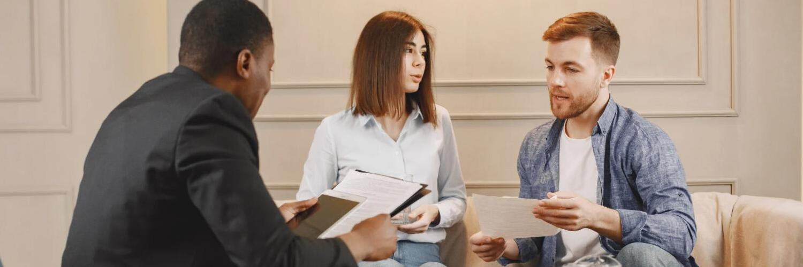
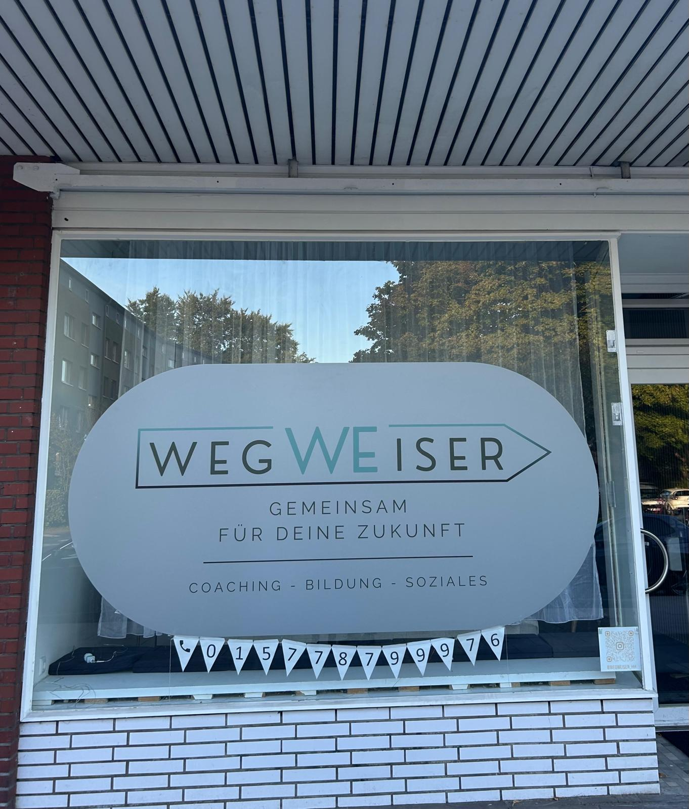

Gemeinsam bauen wir das Fundament für deine Zukunft -
stark, sicher,
einzigartig!


Mit dir gestalten wir eine Zukunft, die Bestand hat -
stabil, glücklich, erfüllt.
stabil, glücklich, erfüllt.

Gemeinsam gestalten wir deine Zukunft -
beständig und voller Perspektiven
beständig und voller Perspektiven


Wegweiser Team
Herr Wasim Sarwari
Geschäftsführer:
Ich bin Herr Sarwari, Wirtschaftspsychologe und systemischer Coach. Seit
vier Jahren bin ich im psychologischen und sozialen Bereich tätig und begleite Menschen auf
ihrem individuellen Weg zu mehr beruflicher und persönlicher Entwicklung.
Meine Vision: Menschen die Hand zu reichen, die ihr eigenes Potenzial nicht kennen oder
vergessen haben.
Frau EvÎn Khalil
Sozialpädagogische Leitung:
Ich bin Frau Khalil und seit sieben Jahren pädagogisch und zwischenmenschlich tätig. Ich bin
Sozialarbeiterin und systemisch-integrative Beraterin. Mitgefühl und Freundlichkeit bilden
für mich die Basis jeder Beziehung. Meine Schwerpunkte liegen in achtsamer und
wertschätzender Kommunikation.
Ich biete Elternberatung, Erziehungsberatung, Beratung für Alleinerziehende, Paarberatung
und Jugendberatung an, unterstütze bei Konfliktklärung und finde gemeinsam mit dir
nachhaltige Lösungen. Ich begleite dich auf deinem persönlichen Weg zu deinem Glück.
⭐⭐⭐⭐⭐
Von der Neuorientierung zur Selbstständigkeit – Anna, 34 Jahre
“Als ich mich beruflich neu orientieren wollte, fühlte ich mich komplett überfordert und wusste nicht, wo ich anfangen sollte. Durch die systemische Beratung des Wegweiser Teams habe ich nicht nur meine Stärken klarer erkannt, sondern auch gelernt, meine Ängste vor dem Schritt in die Selbstständigkeit zu überwinden. Die Sitzungen halfen mir, Blockaden zu lösen und meine Ziele strukturiert zu verfolgen. Heute führe ich mein eigenes kleines Unternehmen – etwas, das ich mir vor einem Jahr nicht hätte vorstellen können. Danke für die wertvolle Unterstützung auf diesem Weg!”
⭐⭐⭐⭐⭐
Work-Life-Balance neu definiert – Thomas, 45 Jahre, Unternehmensberater
“In meiner Branche ist Stress quasi vorprogrammiert, und ich war kurz davor, auszubrennen. Das Coaching hat mir geholfen, meine Prioritäten neu zu setzen und Muster zu erkennen, die mich immer wieder in die Überlastung geführt haben. Besonders beeindruckt hat mich der systemische Ansatz, der nicht nur mich, sondern auch mein berufliches und privates Umfeld in den Blick genommen hat. Heute habe ich eine gesündere Balance gefunden, ohne an beruflichem Erfolg einzubüßen. Das Coaching war eine der besten Investitionen in mich selbst.”
⭐⭐⭐⭐⭐
Familienkonflikte gelöst – Jonas, 27 Jahre
“Ich hatte jahrelang immer wieder Konflikte mit meiner Familie, vor allem mit meinen Eltern. Die Gespräche verliefen oft im Streit, und ich fühlte mich missverstanden. Durch das Wegweiser Team konnte ich nicht nur meine eigene Rolle in diesen Konflikten erkennen, sondern auch lernen, wie ich anders kommunizieren und Grenzen setzen kann. Es war erstaunlich zu sehen, wie sich die Dynamik verändert hat, als ich meinen Blickwinkel geändert habe. Heute ist mein Verhältnis zu meiner Familie viel entspannter, und ich fühle mich endlich frei von alten Mustern.”